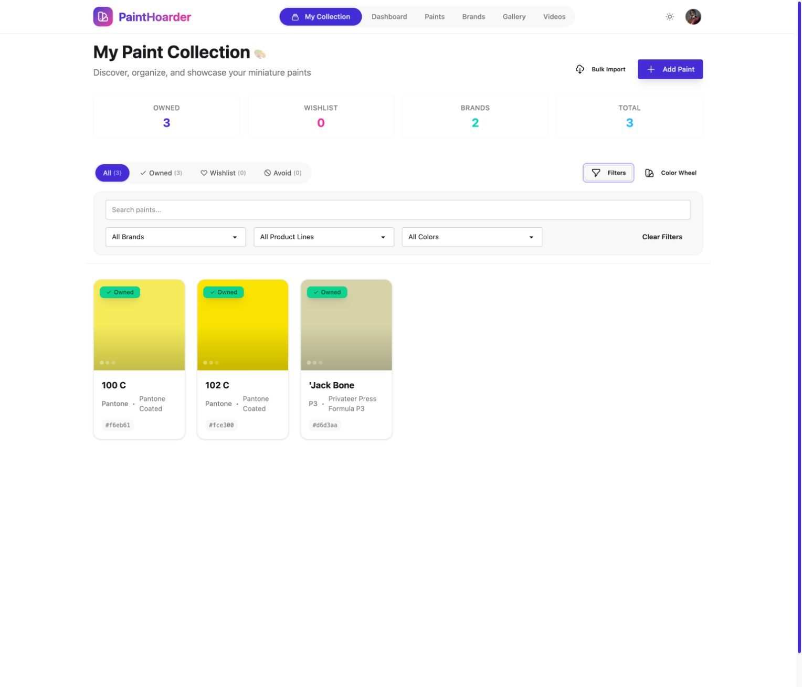
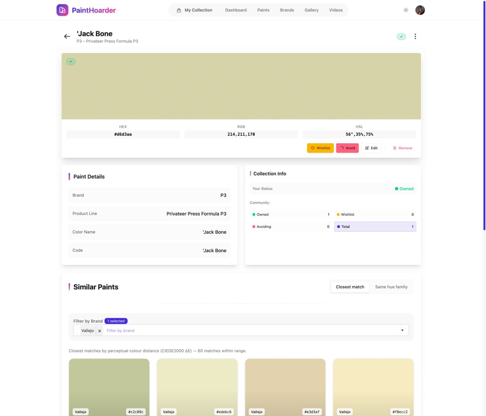
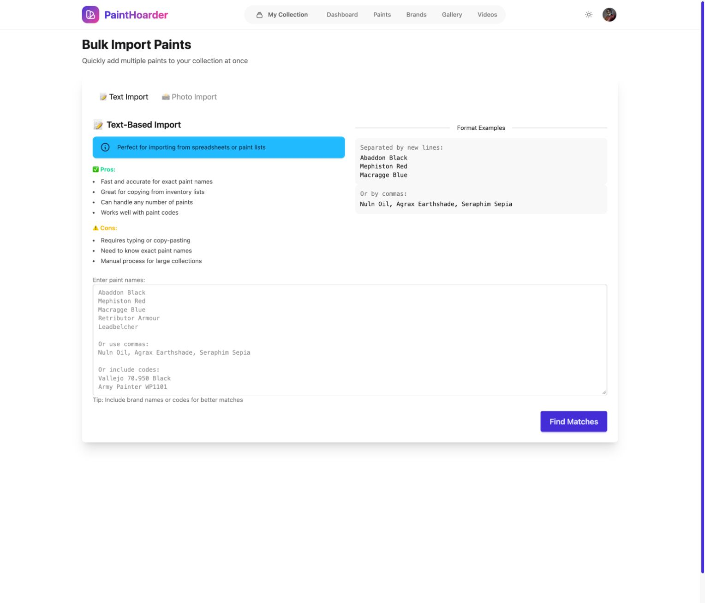
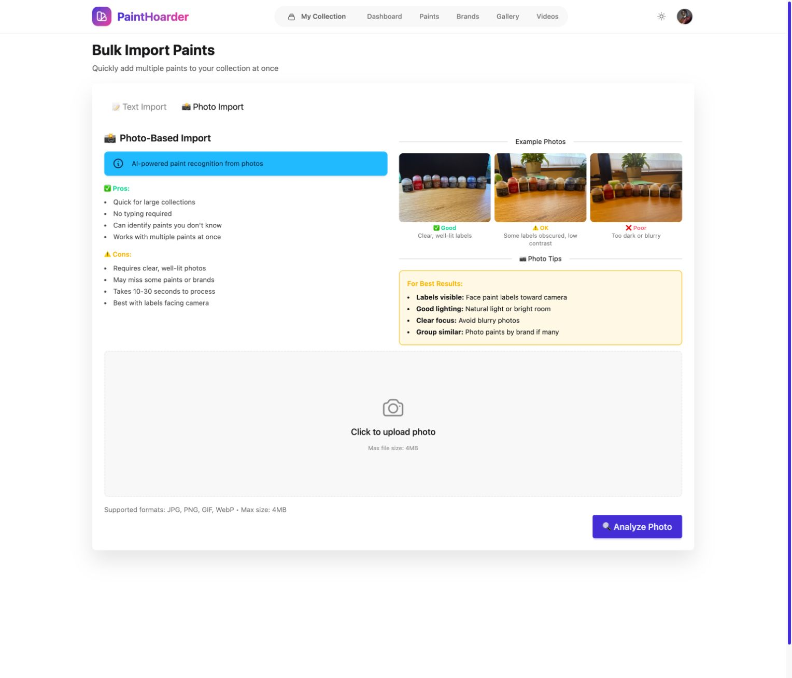
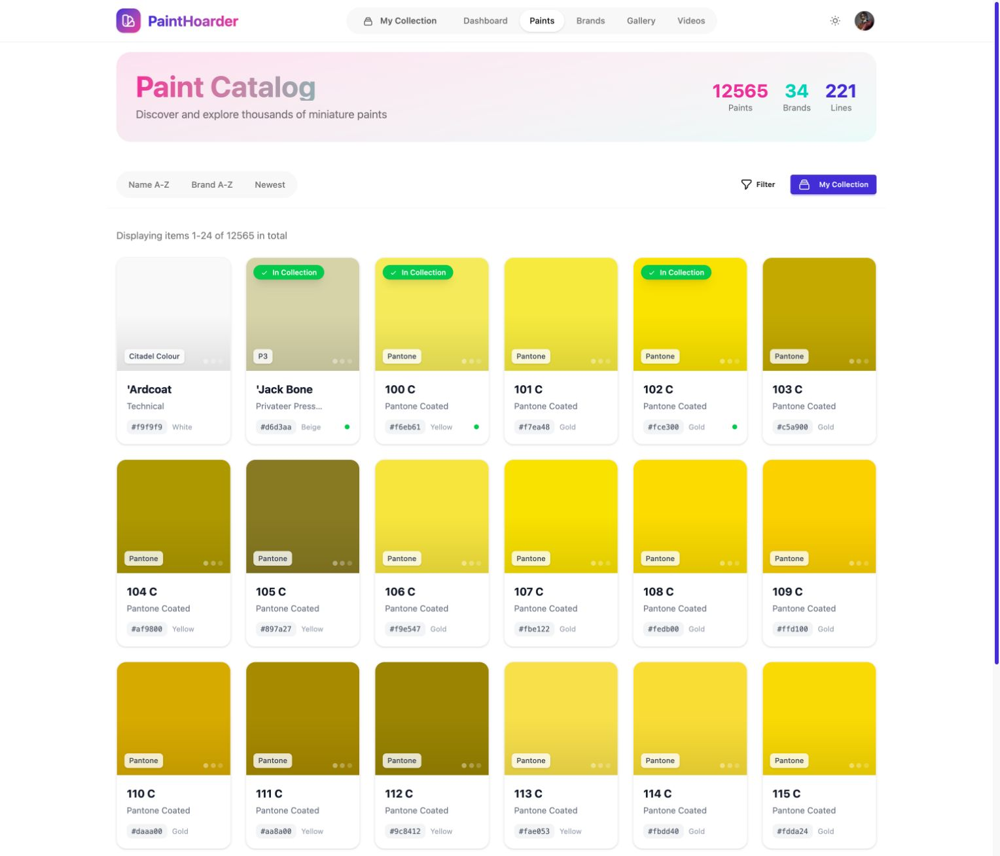
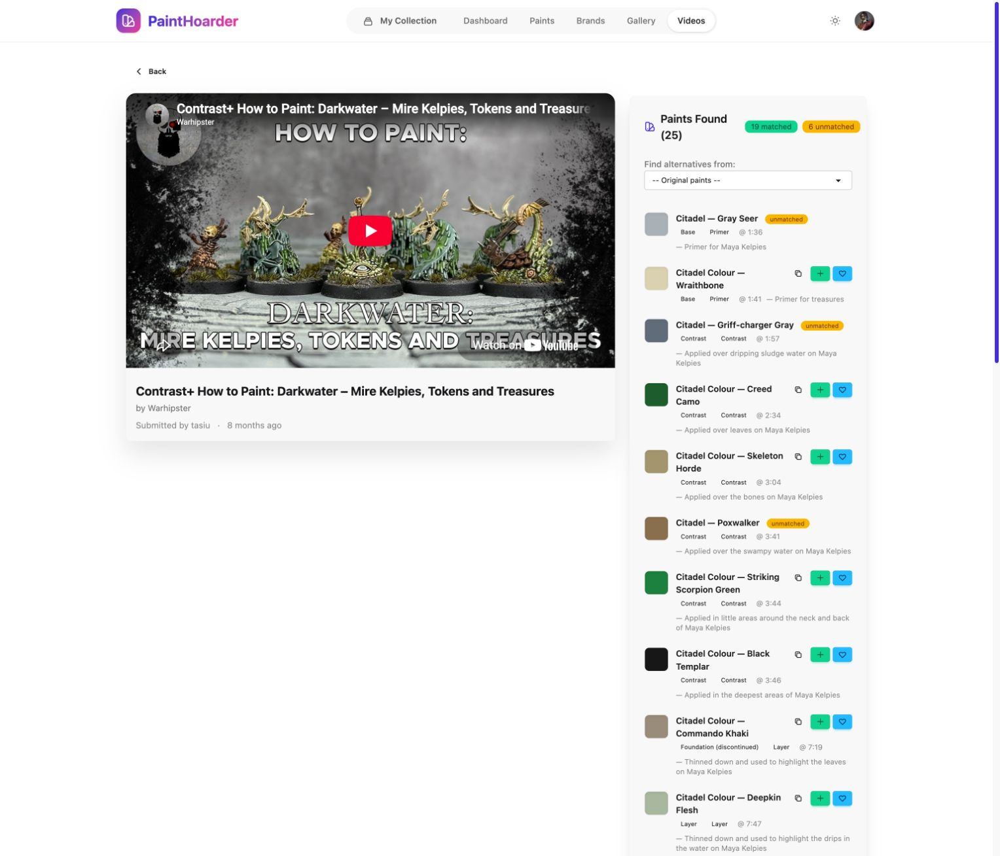
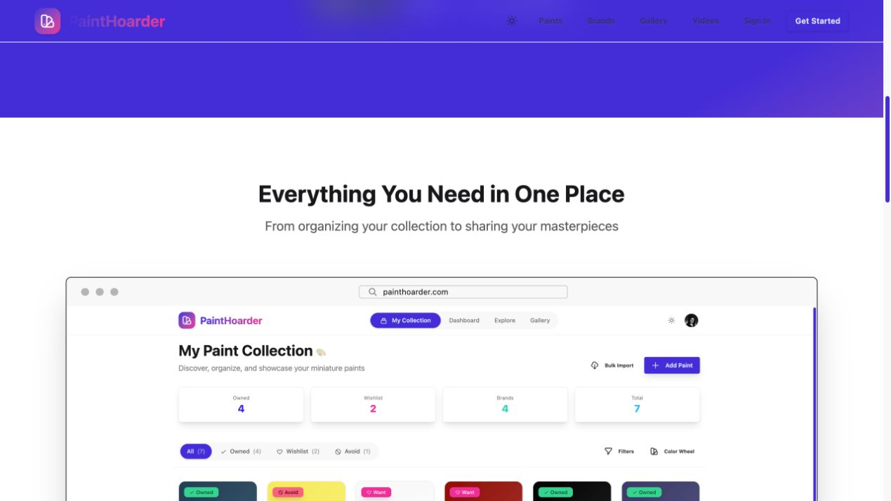

03 · Collection · 1528 × 1309
Collection filters
Narrow the collection by name, brand, line or color.
Captured state: Filters expanded: search, brand, product line, color
Design question: Search is behind Filters. Consider making frequent search visible and defining applied-filter feedback.
/user_paintsView original screenshot ↗
05 · Collection · 1528 × 1309
Collected paint detail
Inspect a collected paint and manage its status.
Captured state: Owned paint; color values, status actions, community counts, similar paints
Design question: Separate status changes, editing and removal; maintain a consistent relationship to the catalogue detail.
/user_paints/57View original screenshot ↗
08 · Import · 1528 × 1309
Bulk text import
Find catalogue matches from a text list.
Captured state: Text Import tab; empty form
Design question: The long pros/cons introduction competes with the task. Prototype a shorter input-to-review journey.
/user_paints/bulk_importView original screenshot ↗
09 · Import · 1528 × 1309
Bulk photo import
Identify paints from a photo.
Captured state: Photo Import tab; slightly scrolled so upload controls fit; no photo uploaded
Design question: Keep examples, upload limits and guidance; include processing, partial recognition and correction states in scope.
/user_paints/bulk_importView original screenshot ↗
11 · Catalogue · 1528 × 1309
Paint catalogue
Browse the complete paint catalogue.
Captured state: Default name sort; 12,565 paints, 34 brands, 221 product lines
Design question: Unify catalogue and collection card patterns, including owned indicators, add affordances and long names.
/paintsView original screenshot ↗
24 · Videos · 1528 × 1309
Video analysis results
Read extracted paints alongside a tutorial.
Captured state: 25 extracted paints: 19 matched, 6 unmatched; video embed and timestamps
Design question: The long narrow results column mixes matched/unmatched data, timestamps and icon actions. Prototype clearer scan and review behavior.
/videos/tasiu-contrast-how-to-paint-darkwater-mire-kelpies-tokens-and-treasuresView original screenshot ↗
28 · Public entry · 1269 × 714
Landing page product showcase
Preview app capabilities before signing up.
Captured state: Scrolled to the existing marketing product-preview carousel; embedded screenshot is promotional content, not live app state
Design question: The embedded marketing screenshots show older navigation. Refresh them after the redesigned app is stable.
/View original screenshot ↗